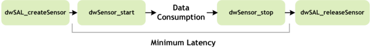

Before you use any sensor in NVIDIA® DriveWorks, you must create an instance of the sensor, then use a start-stop mechanism to collect data and finally release the sensor so all resources are freed.

The following functions support the life cycle shown above:
- dwSAL_createSensor() is the function call that prepares the sensor for data delivery. This includes power up, establish connection, open channels, allocates FIFOs, etc... This function is expected to have a significant cost and should only be used during initialization. Sensor type and parameters are determined by using the above protocol and parameter strings.
- dwSensor_start() is a low latency call that starts the capturing of sensor data.
- dwSensor_stop() is a low latency call that will stop capturing data and will drain any data not consumed in preparation for the next start call.
- dwSAL_releaseSensor() is a function call used to stop the sensor, disconnect it from DriveWorks SAL and release any allocated resources. It is expected to be high latency and should only be called at application termination.
Here is an example of initialization of a virtual camera for video replay and its release:
{
std::string parameterString = "file=/tmp/test.h264";
if (result != DW_SUCCESS) {
std::cerr << "Cannot create camera.virtual?"
exit(1);
}
}
DW_API_PUBLIC dwStatus dwInitialize(dwContextHandle_t *const context, dwVersion const headerVersion, dwContextParameters const *const params)
Creates and initializes an SDK context.
dwStatus
Status definition.
const char8_t * parameters
Array of additional parameters provided to sensor creation.
const char8_t * protocol
Name of the protocol.
DW_API_PUBLIC dwStatus dwSAL_createSensor(dwSensorHandle_t *const sensor, dwSensorParams const params, dwSALHandle_t const sal)
Creates a new sensor managed by the SAL module with the given parameters.
DW_API_PUBLIC dwStatus dwSAL_initialize(dwSALHandle_t *const sal, dwContextHandle_t const context)
Creates and initializes a SAL (sensor abstraction layer) module.
Holds sets of parameters for sensor creation.
Once the sensor has started, it is possible to consume the data being acquired by using generic or specialized accessors.
Generic accessors are used mainly for serialization purposes as they provide raw sensor data. The available function calls are dwSensor_readRawData() to get access to the data memory pointers and dwSensor_returnRawData() to return the pointers back to the sensor abstraction layer. A full workflow based on raw data use is demonstrare in Simple Sensor Recording Sample.
To access processed data one needs to use specialized function calls that will provide the data formatted appropriately depending on the sensor type. For all details on specific sensors see:
After usage the sensor, SAL and SDK handle must be released.
// release camera sensor
dwSAL_releaseSensor(&cameraSensor);
// release SAL module of the SDK
dwSAL_release(&sal);
// Release DriveWorks
dwRelease(&sdk);